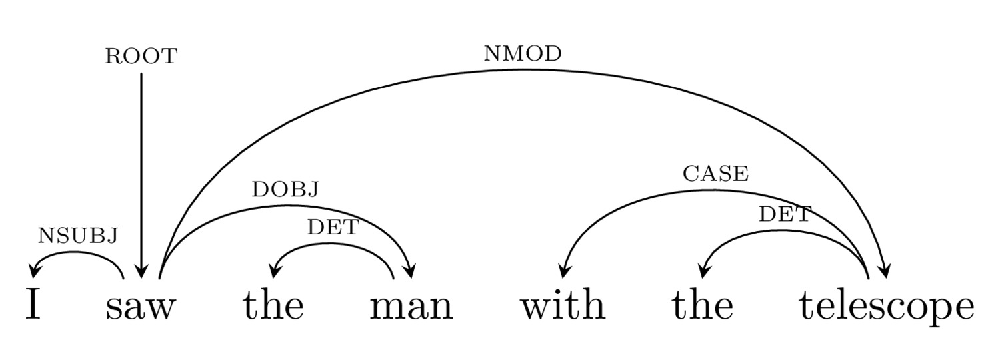
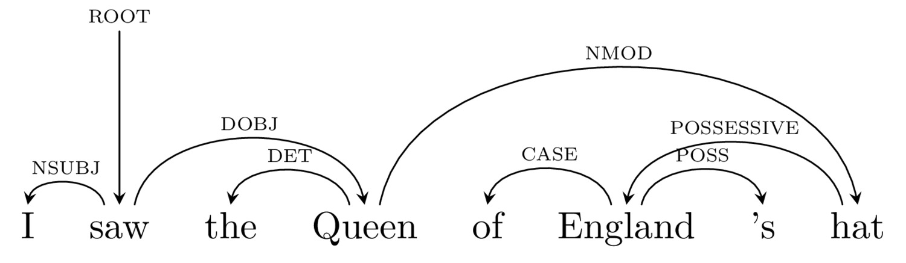

### Remember that your Dean of Student Affairs is here to help you! <http://savethevowels.org/resources> --- # Automatic Syntactic Parsing ### Will Styler - LIGN 6 --- ### Today's Plan - Constituency vs. Dependency Parsing - What is dependency parsing? - How do we do dependency parsing automatically? - Why do we use dependency parsing in NLP? - How is syntactic parsing *actually useful* for natural language processing? --- ### We've talked about trees in terms of constituency - A hierarchy of phrases, containing other phrases - From this, we can get a sense of constituency - ... as well as of attachment --- --- ### These trees come from Phrase Structure Grammars - Also called 'Context Free Grammars' by computer scientists - A series of rules applied which detail grammatical and ungrammatical sentences - With other rules describing changes (e.g. movement, etc) --- ### Linguists use constituency trees for linguistic analysis - For asking linguistic questions, constituency is *crucial* - It shows the units on which syntax operates - It's better to *generate* new sentences - It handles *recursion* --- ### Linguistic Syntax is done using constituency - ... and for a long time so was most NLP --- ### ... but there is another way --- ### Syntax helps tell us which words 'belong' to other words - "The cat jumped onto the table" - "I poked the big bear with a stick" - "I touched the Queen of England's hat" --- ### Syntax also marks who did what to whom - "Jony chased Dieter" - "Jessica ate the veggie burger" - "Felicia gave Juan a drink" - "My aunt bought three cars and set them on fire" --- ### What if we could just capture which words are 'connected' to other words - Describe the nature of that connection (who did what to whom) - ... and skip some of the phrase structure questions --- --- # Dependency Parsing --- ### Dependency Trees - Focus on demonstrating the relationship between elements in the sentence - Dependency ('what's attached to what') - Relations ('Who's doing what to whom') - Visualizes this as a series of relationships --- ### The Angry Squirrel stole the Mixed Nuts from Walmart --- ### The Angry Squirrel stole the Mixed Nuts from Walmart <img class="r-stretch" src="diagrams/dep_angrysqurrel.jpg"> --- ### Dependency Trees mark the connections between words - Words are connected to the words that 'depend' on them - Every word is connected to another <img class="r-stretch" src="diagrams/dep_angrysqurrel.jpg"> --- ### Dependency Trees often mark the types of connections - 'Subject' - The 'do-er' of the verb - 'Direct Object' - The 'target' of the verb - 'Indirect Object' - Often used for recipients - Modifiers - Words that make the meaning of each word more specific <img class="r-stretch" src="diagrams/dep_bakedcakealt.jpg"> --- ### These 'relations' have meaning that doesn't change with order --- <img class="r-stretch" src="diagrams/dep_bakedcakealt.jpg"> --- <small> From Jurafsky and Martin 'Speech and Language Processing' 2018</small> --- [Here's a link to the full guidelines](https://universaldependencies.org/guidelines.html) --- ### Any sentence that can be constituency parsed, can be dependency parsed <img class="r-stretch" src="diagrams/tree_compling2.jpg"> --- ### Any sentence that can be constituency parsed, can be dependency parsed <img class="r-stretch" src="diagrams/dep_compling2.jpg"> --- ### Let's try it: "Will spotted Bigfoot outside the Medical Library" --- ### "Will spotted Bigfoot outside the Medical Library" <img class="r-stretch" src="diagrams/dep_bigfoot.jpg"> --- ### Dependency Parsing can handle huge complexity <img class="r-stretch" src="diagrams/dep_emperor.jpg"> --- ### So, Dependency Parsing is a different beast - Focuses on demonstrating the relationship between elements in the sentence - Dependency ('what's attached to what') - Relations between arguments ('Who's doing what to whom') - Misses some linguistic insight, but gets what we want for NLP --- # How do we do dependency parsing automatically? --- <img class="r-stretch" src="humorimg/nope_octopus.gif"> --- ### We use any number of different algorithms - They examine each part of the sentence, and use machine learning to decide the proper relationships - ... but they're a bit too complex (and linguistically uninteresting) for this class - The Arc Standard approach is most commonly used - You can [read about it in this chapter](https://web.stanford.edu/~jurafsky/slp3/13.pdf) or [watch this lecture](https://www.youtube.com/watch?v=nC9_RfjYwqA) --- ### We're going to focus on why it's done - ... and what it wins us --- # Why Dependency Parsing in NLP? --- ## Dependency Parsing is useful --- ### We can still see some elements of constituency <img class="r-stretch" src="diagrams/dep_compling2.jpg"> --- ### Ambiguity is very easy to resolve with dependency parses --- ### The Angry Squirrel stole [the Mixed Nuts] [from Walmart] <img class="r-stretch" src="diagrams/dep_angrysqurrel.jpg"> --- ### The Angry Squirrel stole [the Mixed Nuts from Walmart] --- ### "I saw the man with the telescope"  --- ### "I saw the man with the telescope" <img class="r-stretch" src="diagrams/dep_manwithtelescope2.jpg"> --- ### "I saw the Queen of England's Hat" <img class="r-stretch" src="diagrams/dep_queenenglandshat1.jpg"> --- ### "I saw the Queen of England's Hat"  --- ## Dependency Parsing works better in some other languages --- ### In Russian, Word order can be used for emphasis * Koshka videt sobaku * "The cat sees the dog" * Videt koshka sobaku * "The cat sees the dog" * Sobaku videt Koshka * "The cat sees the dog" - Russian is a "non-configurational" language --- ### Constituency-based approaches struggle here - <img class="r-stretch" src="humorimg/fail.jpg"> --- ### Dependency parsing works just fine --- --- --- --- ## Dependency Parsing is a bit simpler --- <img class="r-stretch" src="diagrams/tree_compling2.jpg"> --- <img class="r-stretch" src="diagrams/dep_compling2.jpg"> --- ### Dependency Parsing can be done quickly - Right now, dependency parsing is faster than constituency parsing - This might change with new algos and approaches! --- ## Dependency Parsing hands us semantic information for free! --- ### Dependency Parsing gives us 'arguments' <img src="diagrams/dep_bakedcakealt.jpg"> --- ### These arguments are directly useful in natural language understanding! --- # How is parsing actually useful for NLP engineering? --- ## Dependency Parsing hands us information --- ### "Hey Siri, send my wife a romantic text" --- ``` If $ROOT == "send" If $DOBJ == ("text" | "message" | "sms") $NUMBER = get.phonenumber($IOBJ) If $AMOD.DOBJ == "romantic": $MESSAGE = "omg ilu soooo much sweetie uwu üòç" If $AMOD.DOBJ == "mean": $MESSAGE = "I ate your leftover enchiladas and they were gooooood" SEND.SMS $message TO $number ``` --- ## When parsing fails: A Case Study --- ### "Alexa, turn on the office lights and bedroom lights" <audio controls src="comp/alexa_lightfail.m4a"></audio> --- ### Alexa knows how to turn on lights - "Turn on" takes a direct object (light) with modifiers (location) ``` If $ROOT == "turn on" If $DOBJ == "lights" ACTIVATE lights location $NMOD.DOBJ ``` --- ### "Turn on the office lights" --- ### "Turn on the office lights and turn on the bedroom lights" --- ### "Turn on the office lights and bedroom lights" (expected) <img class="r-stretch" src="diagrams/dep_turnonlights.jpg"> --- ### "Turn on the office lights and bedroom lights" (actual) <img class="r-stretch" src="diagrams/dep_turnonlightsbad.jpg"> "I didn't find a device named 'office lights bedroom lights'" --- ### Alexa didn't parse the syntax, and failed - ... in a way that a human would never fail - This is hard, but it's fascinating --- ## So, we need to be able to parse syntax to do NLP - ... and although Linguists tend to use constituency, NLP is dependency-based --- ### Wrapping up - Although most linguists do theory with constituency, in NLP, dependency is king - Dependency parsing focuses on finding links between words and their types - Dependency parsing has many advantages over constituency in NLP - Dependency Parsing is useful for actual engineering tasks! --- ### For Next Time - What does it all mean? --- <huge>Thank you!</huge>